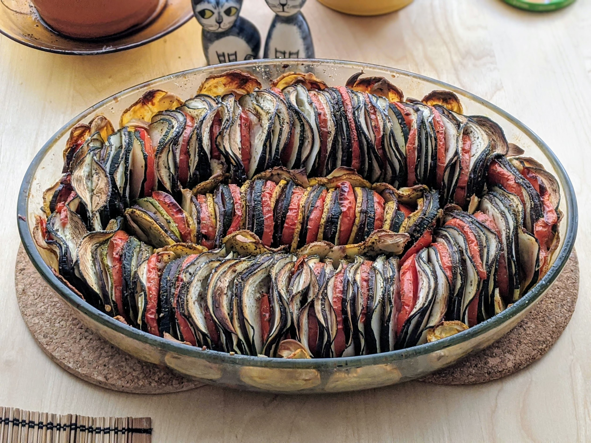

Tian provençal

Pour 4-5 personnes :
- 400g d'aubergines
- 500g de tomates
- 300g de courgettes
- Deux gros oignons
- 6 gousses d'ail
- Un peu de beurre
- Un tas d'herbes de Provence
- Sel, poivre, huile d'olive
- Éplucher et émincer les oignons, les faire revenir le tout dans une poêle avec de l'huile d'olive.
- Pendant ce temps, laver les légumes (sans les éplucher), et les couper en tranches fines de même épaisseur (idéalement avec une mandoline).
- Éplucher l'ail et couper chaque gousse en deux ou trois tranches fines. Faire préchauffer le four à 180°C.
- Beurrer un plat à four et ajouter les oignons lorsqu'ils sont translucides. Puis, disposer les tranches de légumes verticalement en alternant tout autour du plat, puis à l'intérieur.
- Ajouter les tranches d'ail aux endroits où y'a un peu de place. Parsemer généreusement d'herbes de Provence, saler, poivrer, enfourner.
- Laisser cuire 30-45 minutes, puis recouvrir de papier alu, et laisser 30-45 minutes supplémentaires.
Remarque : c'est bien entendu une bonne idée de choisir des légumes de même diamètre pour que ça soit joli =)
Retour à la liste des recettes